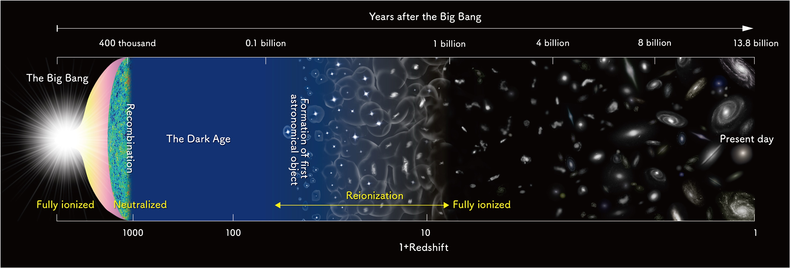
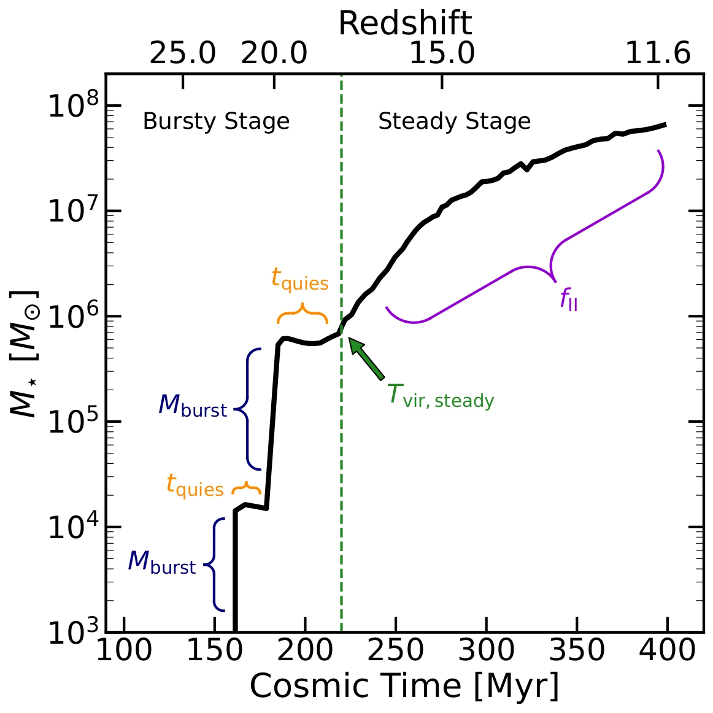
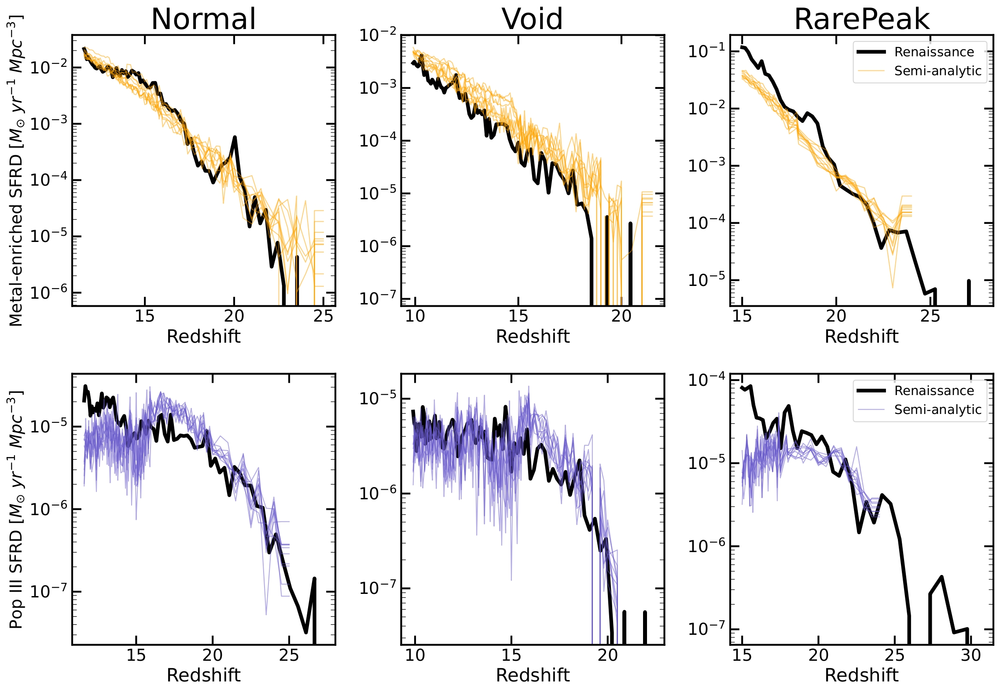

Research
Advisor: Prof. Eli Visbal
My research explores the formation of the first stars and galaxies during the Epoch of Reionization (EoR), a pivotal era in cosmic history that took place roughly 400 million to 1 billion years after the Big Bang. This period marked the universe’s transition from a dark, neutral state to one in which the first luminous objects ionized the intergalactic medium, making it transparent to ultraviolet light.
The very first stars, known as Population III stars, formed out of pristine hydrogen and helium gas, almost entirely free of heavier elements. These stars are thought to have been massive, short-lived, and incredibly hot, playing a central role in enriching the universe with the first heavy elements and influencing the formation of later generations of stars and galaxies. Understanding how they formed is essential for tracing the origins of cosmic structure.
Several key processes governed the birth of the first stars. Lyman–Werner feedback, ultraviolet radiation that dissociates molecular hydrogen, could suppress star formation in small halos by preventing gas from cooling efficiently. The baryon–dark matter streaming velocity, a relic of conditions at recombination, created a velocity offset between normal matter and dark matter, delaying the collapse of gas into halos. Additionally, external metal enrichment from nearby supernovae could seed pristine halos with heavy elements, altering the cooling physics and triggering an earlier transition from Population III to metal-enriched Population II star formation.
To model these processes in detail, we rely on cosmological hydrodynamical simulations, which capture the complex interplay between gravity, hydrodynamics, and radiative feedback. These simulations provide deep physical insight but are computationally expensive, limiting their ability to reach the lower, observable redshifts accessible by current and upcoming telescopes.
This is where semi-analytic models become essential. By calibrating these faster, flexible models to high-resolution hydrodynamical simulations, we can explore a wide range of star formation prescriptions and feedback scenarios at a fraction of the computational cost. This approach bridges the gap between physically detailed simulations and observational predictions, enabling us to connect theory with data from next-generation facilities such as the James Webb Space Telescope and the upcoming Nancy Grace Roman Space Telescope.
A Framework to Calibrate a Semianalytic Model of the First Stars and Galaxies to the Renaissance Simulations
In this work, we developed a semi-analytic model calibrated to the Renaissance Simulations to study the formation of the first stars and galaxies. Our model captures both Population III (Pop III) and metal-enriched star formation, including a stochastic two-stage process for metal-enriched stars, and implements delays between Pop III supernovae and the onset of subsequent star formation.
We mainly focus on calibrating our model to metal-enriched star formation because Renaissance poorly resolves the minihalos that host Pop III star formation. Therefore, our calibration to Pop III in Renaissance provides little physical insight applicable to other work. For metal-enriched star formation, the two-stage prescription reproduces the overall star formation histories of individual halos and the global star formation rate densities within a factor of ~2 for the average density Normal region. Applying the model to rarer overdense or underdense regions shows modest deviations, suggesting that environmental effects not currently included, such as external enrichment, could further impact early star formation.
Overall, our calibrated semi-analytic framework efficiently reproduces the key statistical properties of early star formation and can be used to explore a wider range of scenarios than is feasible with fully numerical simulations, while also providing a platform for future studies of environmental effects, feedback, and observational predictions.
Please see my paper linked below: